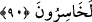
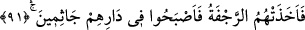

şöyle olur: “Rabbimiz, bizim durumumuzu açığa çıkar. Ta ki bizimle onlar arasındaki
mesele belli olup haklı ile haksız birbirinden ayrılsın.”
et-Te’vîlâtü’n-Necmiyye’de şöyle denilmiştir: Bizim için takdir ettiğin hayırlı sonu ve
onlar için takdir ettiğin kötü sonu ortaya çıkarmak suretiyle bizimle onlar arasında
hükmet.
90. Kavminden ileri gelen kâfirler dediler ki: Eğer Şuayb’e uyarsanız o takdirde
siz mutlaka ziyana uğrarsınız.
“Kavminden inkar eden ileri gelenler” Şuayb (a.s.)’ın kavminin küfürde ısrar eden
eşrafı, Şuayb (a.s.)’ın ve beraberindeki mü’minlerin imandaki salabetlerini,
bağlılıklarını görünce kendi kavimlerinin onlara uymasından korkup onları imandan
alıkoymak ve uzaklaştırmak için yemin ederek “dediler ki: “Eğer Şuayb’in peşinden
giderseniz,” onun dinine girer ve atalarınızın dinini terkederseniz “muhakkak siz”
hidayeti, dalâletle değiştirdiğiniz için dînî bakımdan ya da ölçü ve tartıda hile yapmak
suretiyle kâr elde etmekten mahrum kalarak dünyevî bakımdan “ziyana uğrarsınız.”
91. Derken o şiddetli deprem onları yakalayıverdi de yurtlarında diz üstü
donakaldılar.
“Derken o müthiş sarsıntı” yani, şiddetli zelzele “onları yakalayıverdi.” Ankebût
suresinde de aynı ifade geçmektedir (bk. el-Ankebût 29/37). Hûd suresinde ise:
“Zulmedenleri o korkunç ses yakaladı.” (Hûd, 11/67) buyurulmuştur. Buradaki
korkunç sesten maksad, Cebrâil (a.s.)’ın sayhasıdır. Belki de sarsıntının kaynağı onun
sayhasıdır. Şu halde Şuayb (a.s.)’ın kavminin helâki, bazen yakın sebep olan sarsıntıya,
bazen de uzak sebep olan sayhaya (korkunç sese) bağlanmıştır.
İbn Abbas (r.a.) demiştir ki: Yeryüzü onları salladı ve şiddetli bir sıcaklık onları
kapladı. Derken üzerlerinde bir bulut yükselmeye başladı. Halk, serinlemek için bulutun
altına doğru ilerlediler. Tam altına vardıklarında, Cebrâil (a.s.)’ın sayhasıyla birlikte
bulut, onların üzerine azab indirdi.
“Yurtlarında” yani, şehirlerinde
Haddâdî, der ki: Yani,“Nihayet o gölge gününün azabı, onları yakaladı.” (eş-Şuara
26/189) ayetinde ifâde edildiği gibi evlerinin yakınında gölgenin altında “diz üstü çöke